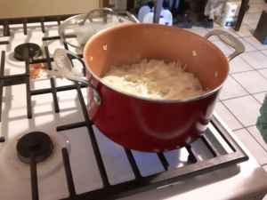
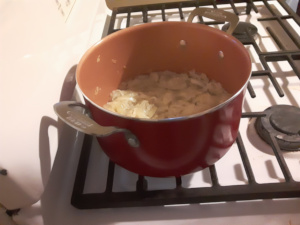
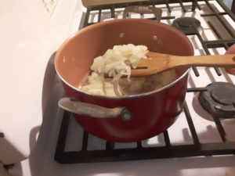
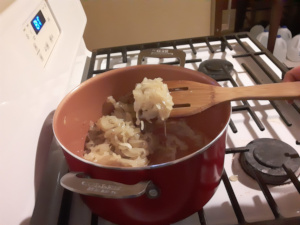

Home
Prep Onions
Equipment
How to Use
The Recipes
Novice
Advanced
Expert
Caramelized Onions: Novice (Nonstick Pot)

Step 1

After 30 minutes

After 60 minutes

After 90 minutes
Ingredients
3 lbs onions, yellow preferred
1/4 cup oil, more if you want extra oil for other recipes
1/4 teaspoon salt
Instructions
After prepping your onions, turn the stove top to medium-high, and add the oil. Add about half of the onions along with the salt, and stir well. Now, add the rest of the onions, and stir again until they are well coated in oil and salt.
Cover the pan, but leave the lid askew. Turn the heat down to medium low, and cook for 30 minutes.
After 30 minutes, carefully remove the lid to avoid the steam. Stir the onions well, and turn heat to low. Cook, uncovered and undisturbed, for another 30 minutes.
NOTE: If there is a lot liquid (over 1/2 inch) left in the pan, just cook uncovered at medium-high for about 15 minutes before setting the 30 minute timer for this step.
Stir the onions well, and set a few aside to cool. They should now be soft and just a little golden. Continue cooking for another 30 minutes.
NOTE: Once cool, taste the onions. They aren't finished, so you will still taste some rawness. Note this flavor, as it will help you get a feel for how much longer future batches need to cook.
Stir the onions, and do another taste test. By now the onions should have cooked long enough to be somewhat golden. This will really depend on the pan and the temperature, so if your onions don't have a deep, sweet flavor, just cook for another 20 minutes and taste them again. You can repeat this step many times at 20 - 30 minute intervals for a deeper and sweeter flavor. I was happy with mine at this point, and removed them from the heat.
NOTE: If your onions are transulent and white, and don't taste very good, then the heat isn't high enough. Turn the heat up to medium high until they begin to sizzle, then drop the heat back down to low. Now increase the heat higher than what you've been using over the last hour, about 1 mark on an electric stove. For gas stoves, just raise the flame height about 1/8 of an inch. Now, begin cooking at 20 - 30 minute intervals, taste testing each time, until you enjoy the flavor.